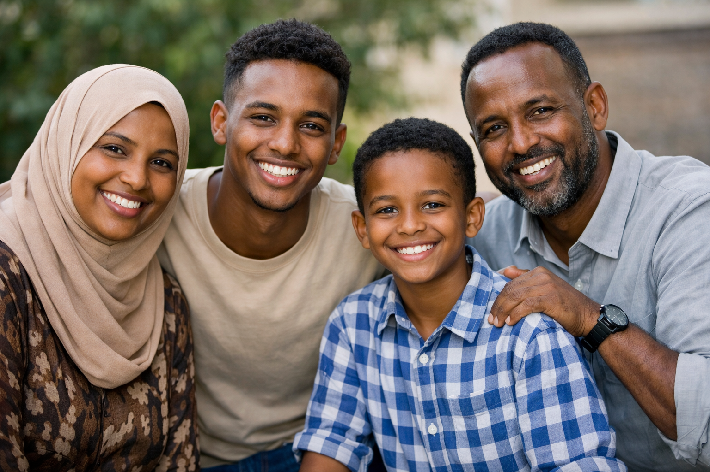

Seefar Foundation
Changing what people decide — about migration, work, and their futures.
We design and deliver evidence-based programmes that give people the information and support to make safer choices.
Trusted by governments and multilateral funders
Seefar Foundation, by the numbers
The evidence behind the work
Featured projects
Specific, evidenced, named
What we do
Four themes, one taxonomy Pending — label blessing
How we work
A hybrid model: expert advisory and the technology to deliver it at scale
Strategic communication
Behaviourally-informed campaigns that reach people where decisions are made.
Counselling
One-to-one guidance through trusted channels, including chat and helplines.
Education
School outreach, e-learning and CSO training through Seefar Academy.
Digitalisation
Products such as Canda and our WhatsApp chatbot that scale a service.
A human moment
A participant's story

Heroes at Home — 3 min · captionedThe counsellor did not tell me what to do. She gave me the facts I did not have, and I made the decision myself.
Still moving
Latest updates
Fund a project. Commission our methods. Build a consortium.
Every claim on this site has its evidence one click away. Let's talk about what you're trying to change.